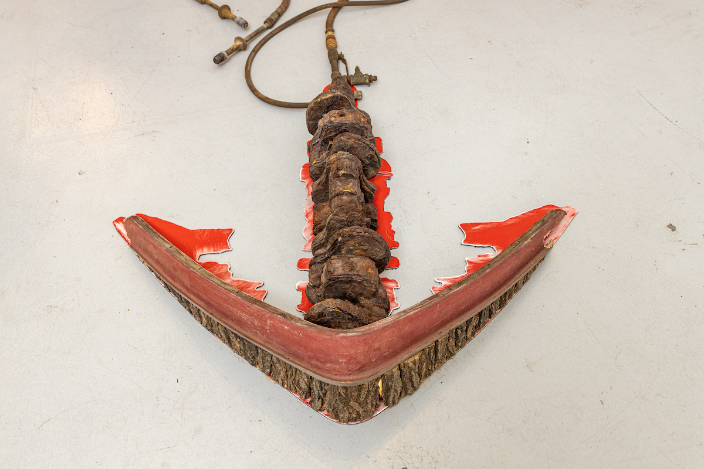
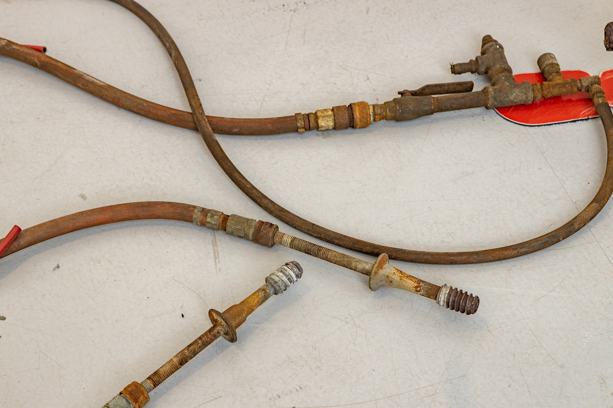
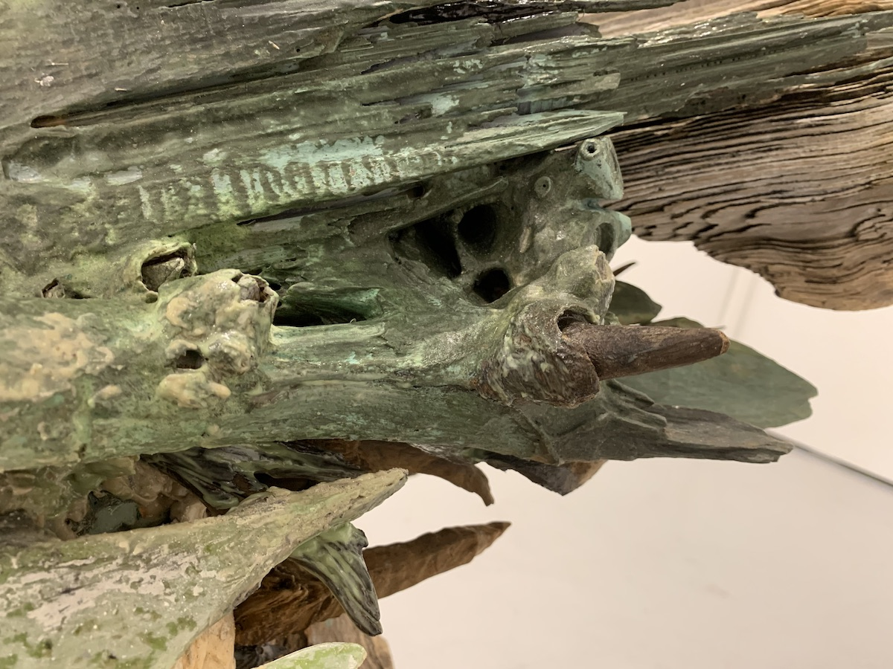
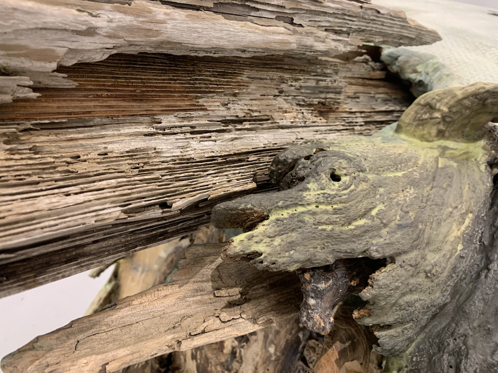
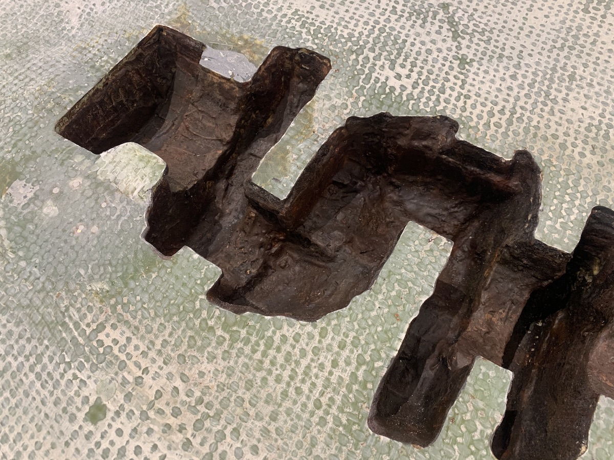
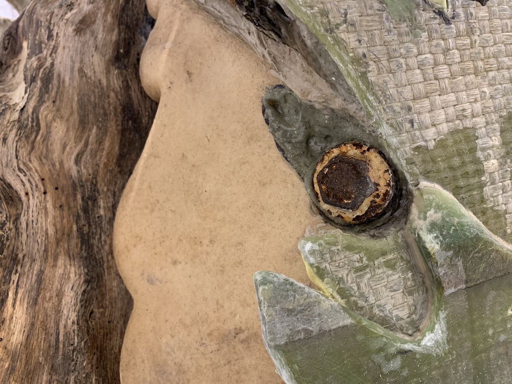
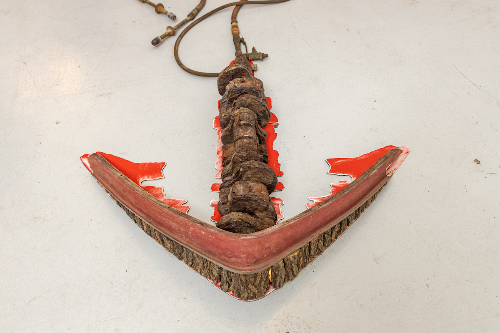
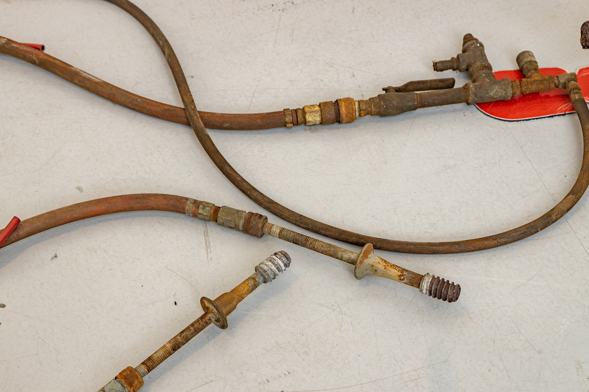
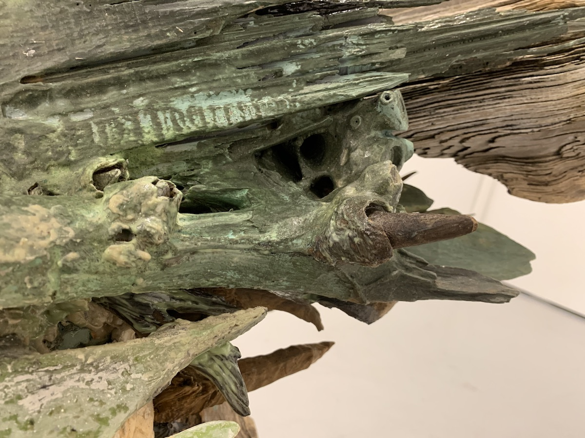
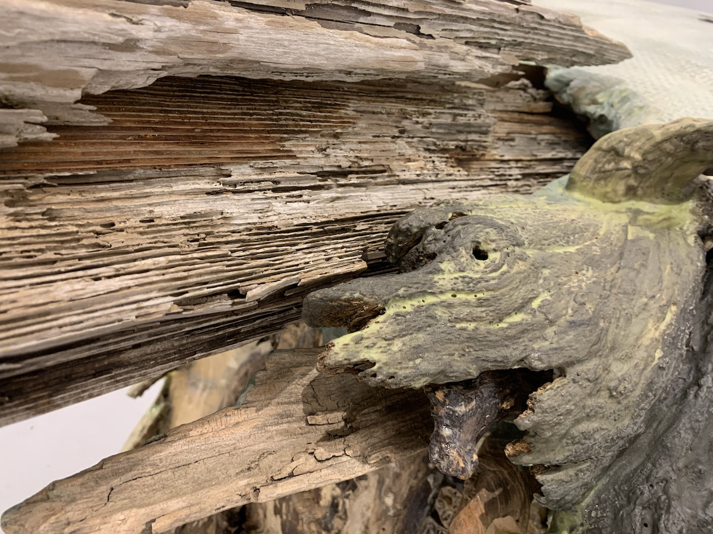
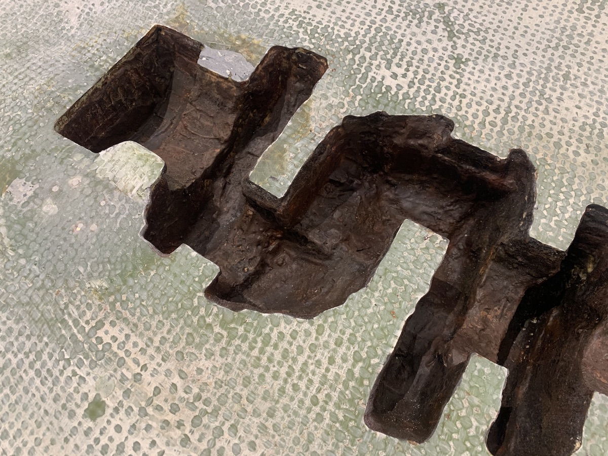
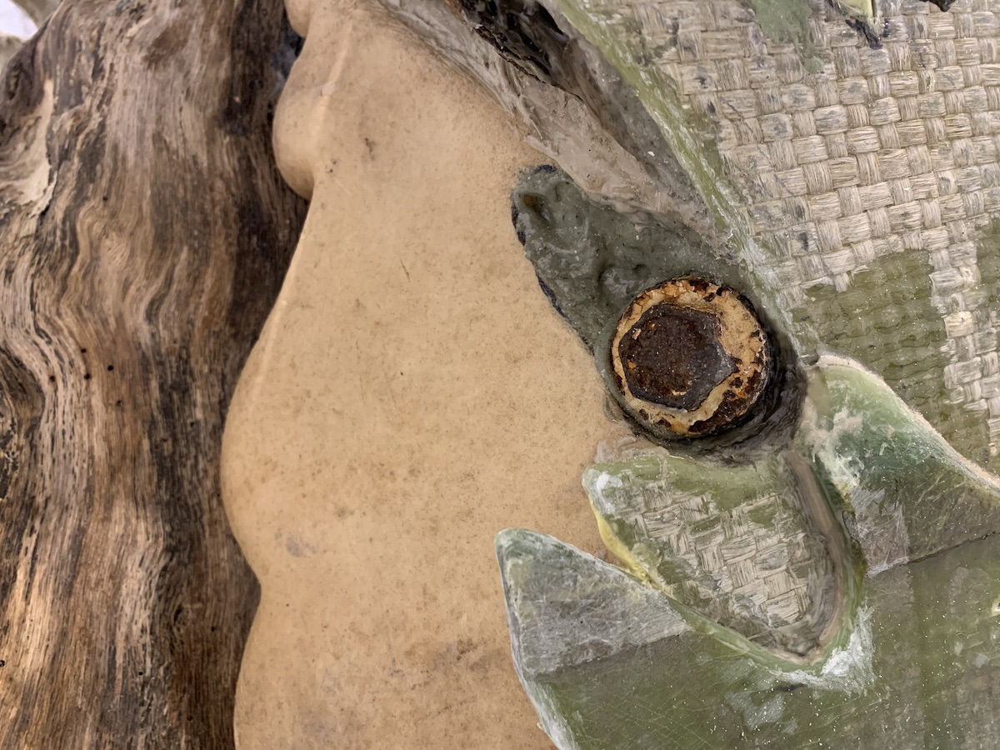
Drift log with rusted steel inclusions, found wood, fiberglass, total
boat epoxy resin, 18’ sunfish parts, rusted crankshaft (unknown
origin), aluminum composite panel, dried citrus fruits, caltrops,
barnacles, plant matter, hoses from abandoned building.
2022
In the aftermath of the 2011 Fukushima nuclear disaster, philosopher
Jean-Luc Nancy declared that any disaster henceforth could no longer
be dispensed as “a misfortune whose consequences can be more or less
easily circumscribed.” Not when our technological, economical, and
political structures are necessarily imbricated; and especially not
when we are responsible for helming such “interdependent totality of
civilization,” as we march towards the end of time in blissful
precarity. So much for our hopes for salvation, Nancy’s enjoinder is a
bleak dagger: “Let us think that it is we who are arriving, or who are
leaving.”
To encounter Erik Nilson’s Drogue (2022) is to come
to terms with Nancy’s dictum—to acknowledge and experience, once and
for all, the end of our time. Sourced from Nilson’s jaunts in what he
calls “interstitial” spaces—sites of industrial waste, reckless
abandonment, and blurred landscape—the work in front of us denies any
easy attempt at categorization or recognition. A capsized body of the
boat covered in sea green sprawls on the floor, with a gaping hole in
the shape of crankshaft. At its rear, a drift log gloriously sprouts
out—the boat’s hard, metal shank morphing into the wood grain so
spontaneously as if to declare that such a growth was a given. This
permutation is continual: on the upper end of the drift log, smaller
rusted steel sticks protrude outwards, while on the bottom corner,
similar brown-encrusted hose lines extend. At the end: an anchor with
a crankshaft in the center, replete with cracked red on its contours,
as if it could awaken any moment to a motorized self and tear through
any obstacles. If the bloodened anchor serves as an omen, forms morph
and mutate endlessly on their own, traversing the multiple terrains.
Decoupled from us, the decay has become newly reignited with life,
creating its own reality. Unbeknownst to us, perhaps it has always
been this way.
Accompanying the commanding boat-log
hybrid are three sets of mechanical parts—stretched taut on the wall
and the floor—and whose skeletal grooves taken on the sheen of
fossilized bones. The found hardware, such as a found car part or a
fan blade, seamlessly interlock with cast aluminum spirals. With these
“stinger types,” as Nilson affectionately calls them, Nilson’s
self-description as a fabricator comes to the fore. For the word
fabricator not only speaks to the requisite labor in fashioning them,
but also the forging—creating an entity that deviates from our
conceptualization of the world. These uncanny stingers stretch and
curl on their own accord, telegraphing a sense of deep vibrancy. And
these otherworldly beings are staunch in their refusal to let their
forces and energies be tapped and exploited by us.
The hollow mingles with the solid—the present
shifting into an impression of something it once was. Strewn before us
are the literal motors of our mundane lives, simultaneously present
and absent. Drogue is the relic of our present, intertwined with a
profound melancholy: we are the ones leaving.
--Adela Kim